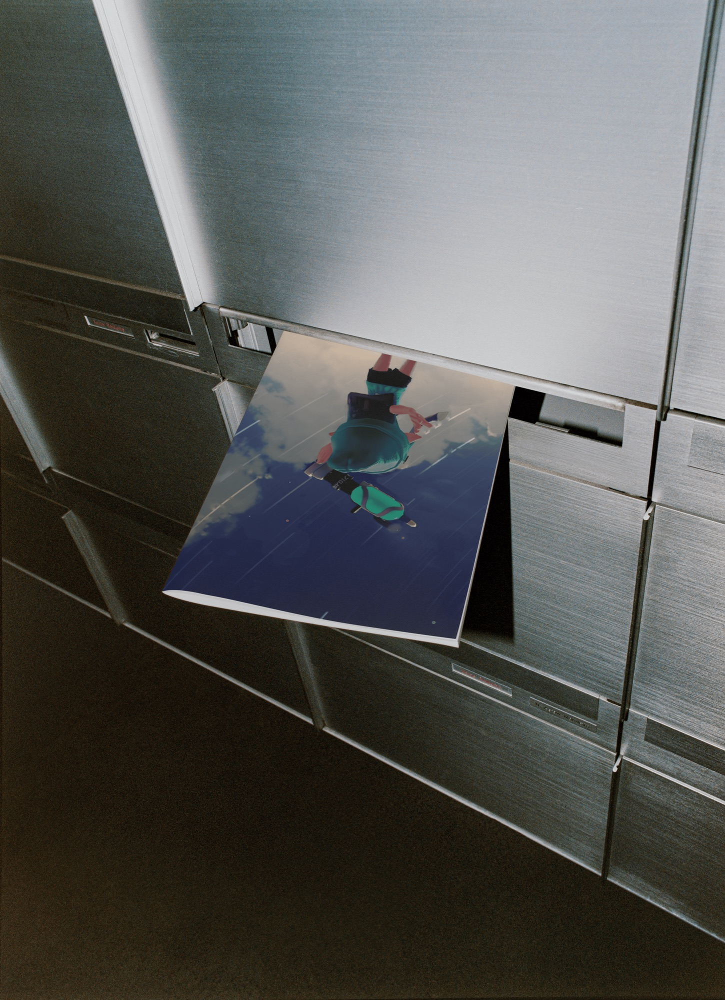

1. Miffy Trap — Font Design, 2026
1. Miffy Trap — Font Design, 2026 2. Invisible Made Visible — Exhibition Design, 2026
2. Invisible Made Visible — Exhibition Design, 2026 3. Mori — Brand Identity, 2026
3. Mori — Brand Identity, 2026 4. Mellow — Brand Strategy, 2026
4. Mellow — Brand Strategy, 2026
5. Ink Life — Publication Design, 2026 6. Digital Detox — Exhibition Design, 2025
6. Digital Detox — Exhibition Design, 2025 7. Punk — Newspaper, 2025
7. Punk — Newspaper, 2025 8. Random Glyph — Font Design, 2025
8. Random Glyph — Font Design, 2025 9. Visual Lexicon — Poster Series, 2025
9. Visual Lexicon — Poster Series, 2025 10. Harbor Freight Rebrand — Brand Identity Design, 2025
10. Harbor Freight Rebrand — Brand Identity Design, 2025 11. Album Cover — Cover Design, 2024
11. Album Cover — Cover Design, 2024 12. Kitbit — Poster Series, 2024
12. Kitbit — Poster Series, 2024 13. Garden Diaries — Publication Design, 2024
13. Garden Diaries — Publication Design, 2024 14. Data Through Time: Tracing Path — Exhibition Design, 2024
14. Data Through Time: Tracing Path — Exhibition Design, 2024 15. Revived Pages — Brand Identity Design, 2024
15. Revived Pages — Brand Identity Design, 2024 16. Gatcha Box — Toy Design, 2024
16. Gatcha Box — Toy Design, 2024 17. Roots of Tension — Game Design, 2024
17. Roots of Tension — Game Design, 2024 18. Margin Notes — Editorial Design, 2024
18. Margin Notes — Editorial Design, 2024 19. August — Poster Design, 2024
19. August — Poster Design, 2024 20. Abnormal Desire — Booklet Design, 2023
20. Abnormal Desire — Booklet Design, 2023